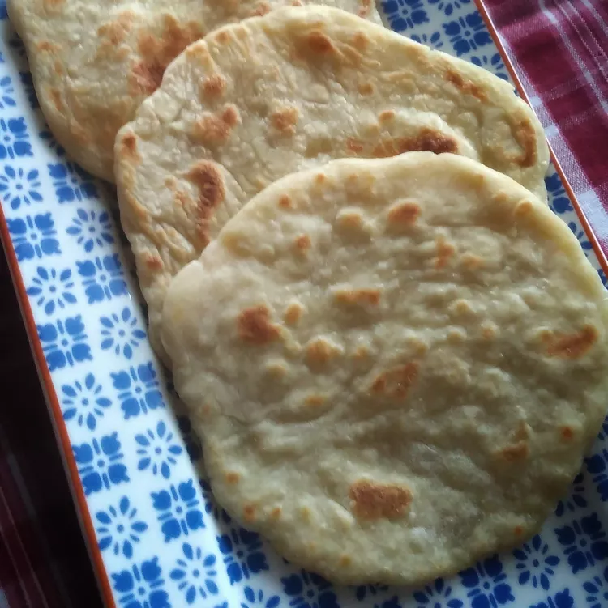

Chapati

Description
Adopted from Indian cuisine, African bread known as chapati has been a part of East African cuisine for centuries. The East African recipe is slightly different from its Indian counterpart. This bread accompanies African soups and stews well. Preparation is minimal, making this a great choice for cooks in a pinch.
Ingredients
- 2 cups all-purpose flour, sifted
- 1 teaspoon salt
- 3/4 cup warm water, or as needed
- 1 teaspoon vegetable oil
- 2 teaspoons all-purpose flour, or as needed
- 1 tablespoon vegetable oil
Steps
- Mix 2 cups flour and salt together in a bowl. Slowly mix in enough water to make a thick dough. Mix in oil until combined.
- Knead dough on a cool surface for a few minutes, adding a few spoonfuls of flour. Return dough to the bowl, cover with a clean cloth, and let rest for 30 minutes.
- Preheat the oven to 200 degrees F (95 degrees C).
- Heat a skillet or griddle over medium heat.
- Divide dough into orange-sized balls. Flatten into 6-inch circles.
- Fry in batches in the hot skillet, turning once, until golden brown and spotted, 6 to 8 minutes. Repeat with remaining dough. Keep chapatis warm in the oven.